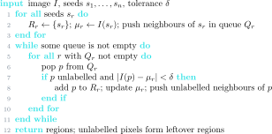

Algorithm

Choices
- initialisation: manual seeds, pixels with the lowest local variance, or atomic regions from a split step;
- criterion: distance from the region mean (optical), ratio to the region mean (SAR), multiband distance;
- connectivity: 4- or 8-neighbours.
Intuition
Drop ink on a few points and let each blot spread over pixels similar to it, stopping at edges.
Pitfall
Updating the mean as the region grows lets it drift: a slow gradient (a field darkening towards a ditch) can be absorbed step by step into one region that spans very different values.